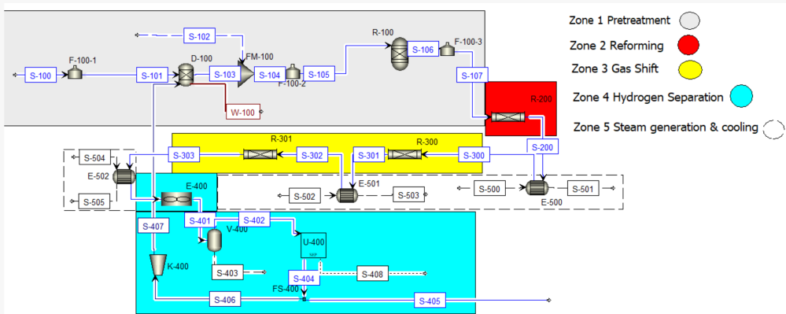
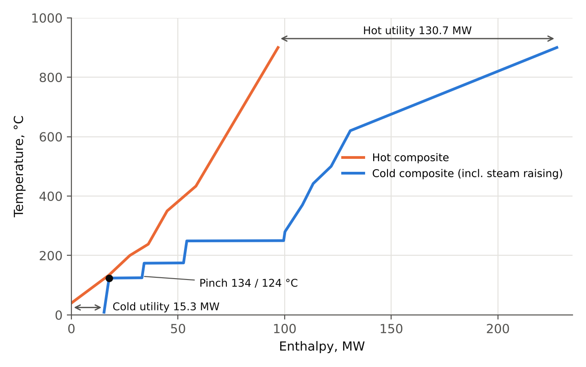
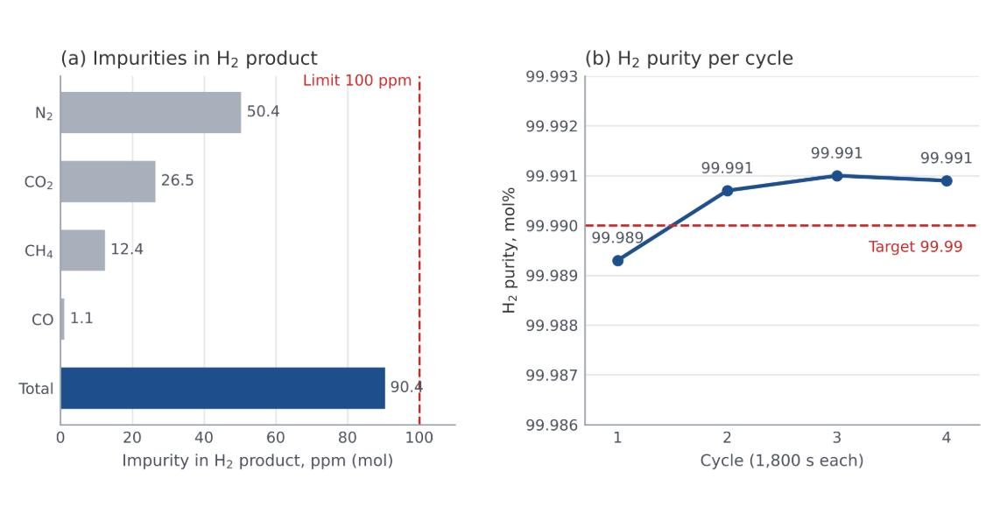
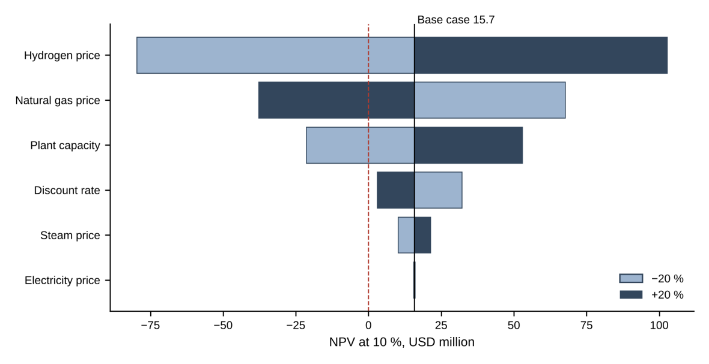

M.Eng. Design Project (CHE654) · Team of three · 2026
Hydrogen plant by steam methane reforming
A preliminary design of a plant that makes 100,000 Nm³/h of 99.99% pure hydrogen from natural gas, about 78,000 tonnes a year. We took it from reaction kinetics and optimization in Aspen Plus through heat integration, equipment sizing and a full economic evaluation.
- Hydrogen product
- 8,898 kg/h, 99.991 mol%
- Optimum operation
- S/C 2.5 · 900 °C · 30 bar
- Fired duty vs pinch target
- 133.1 MW, +1.8%
- Surplus steam exported
- 80 t/h
Figures from the first draft of the design report (November 2026). Plant sited on the US Gulf Coast.
My part
- Built the Aspen Plus flowsheet with kinetics from the literature for the reformer and the high- and low-temperature shift reactors.
- Ran the pinch analysis that set the heating and cooling targets for the plant.
- Sized the reactors, fired heaters, heat exchangers and PSA beds, and costed the plant in Aspen Process Economic Analyzer.
- Oversaw a teammate's natural-gas price comparison, which supported siting the plant on the US Gulf Coast rather than at Map Ta Phut.
How the plant works
The plant is split into five zones. Natural gas is cleaned and pre-reformed, reformed with steam at 900 °C in fired catalyst tubes, then shifted to turn carbon monoxide into more hydrogen. On the way down to 40 °C the gas raises steam at three pressures, and a pressure-swing adsorption unit separates the hydrogen. The PSA tail gas supplies about 94% of the furnace fuel.

| Unit | What it does | Conditions |
|---|---|---|
| Zone 1 · Pretreatment | ||
| F-100-1/2/3 | Furnace convection coils that preheat the feed between steps | to 370, 500 and 620 °C |
| D-100 | ZnO guard beds (two vessels) that remove sulfur, which would poison the catalysts | 370 °C, 30 bar |
| R-100 | Adiabatic pre-reformer that converts ethane to pentane | 500 → 442 °C |
| Zone 2 · Reforming | ||
| R-200 | Fired tubular reformer: 364 catalyst tubes, 11.1 m heated length | 620 → 900 °C, 30 bar |
| Zone 3 · Gas shift | ||
| R-300 | High-temperature shift | 350 → 434 °C |
| R-301 | Low-temperature shift | 200 → 238 °C |
| Zone 4 · Hydrogen separation | ||
| E-400 | Air cooler | 134 → 40 °C, 17.6 MW |
| V-400 | Knock-out drum that removes condensed water | 40 °C |
| U-400 | 10-bed PSA with layered activated carbon and zeolite 5A | 99.991 mol% at 83.6% recovery |
| K-400 | Compressor that recycles a little hydrogen to the guard beds | to 30 bar |
| Zone 5 · Steam generation | ||
| E-500 | HP waste-heat boiler, three shells, designed in Aspen EDR | 900 → 350 °C, 45.4 MW |
| E-501 | MP steam boiler | 434 → 200 °C, 18.5 MW |
| E-502 | LP steam boiler, the pinch match | 238 → 134 °C, 15.4 MW |
Optimization
The operating conditions were chosen to minimize the variable cost per kilogram of hydrogen, with a limit on carbon formation in the catalyst. The optimum is a steam-to-carbon ratio of 2.5, a reformer outlet of 900 °C and 30 bar, and shift inlets of 350 °C and 200 °C. That gives a variable cost of 0.573 USD/kg H₂ with a maximum carbon activity of 0.38, so no carbon forms.
Pinch analysis
Pinch
134 / 124 °C
Hot / cold, at ΔTmin = 10 °C
Hot utility
130.7 MW
Target. The design fires 133.1 MW, only 1.8% more.
Cold utility
15.3 MW
Target. The design uses 17.6 MW of air cooling.

The pinch sits at the cold end of the LP boiler E-502, where the process gas at 134 °C meets LP steam at 124 °C. The design is within 2.4 MW (under 2%) of the minimum heating target, so no extra heat-exchanger matches were worth adding. The plant raises about 155 t/h of steam: 75 t/h feeds the reformer and the other 80 t/h is exported and sold.
Equipment and materials
The reformer furnace and the PSA make up 83% of the installed equipment cost. The PSA cycle was developed in Aspen Adsorption and meets the 99.99 mol% target with 90 ppm of total impurities, at 83.6% hydrogen recovery. The unrecovered hydrogen is burned as furnace fuel.
Every unit that handles hot hydrogen-rich gas above about 204 °C uses 1¼Cr-½Mo steel, selected with the API RP 941 Nelson curves to avoid high-temperature hydrogen attack. The reformer tubes are cast HP-40Nb alloy, chosen for creep strength at wall temperatures up to 997 °C. The hot end of E-500 also sits in the metal-dusting range, so its alloy is flagged for vendor review.

Economics
- Fixed capital investment
- $75.2M
- Revenue
- $75.8M / yr
- Operating cost
- $61.2M / yr
- NPV at 10%
- $15.7M
- IRR
- 12.5%
- Payback
- 6.9 years
At 1.00 USD/kg the plant passes every feasibility test, but only just: the break-even hydrogen price is about 0.96 USD/kg. The hydrogen price matters most, followed by the natural-gas price and plant capacity. A 20% fall in either the hydrogen price or the capacity, or a 20% rise in the gas price, would make the project unprofitable.

Why the US Gulf Coast: natural gas there costs 3.90 USD/MMBtu against 10.73 in Thailand, and there are existing merchant buyers for hydrogen. Thailand's merchant market, about 30,000 t a year, is smaller than this plant's output.
What would make it attractive: capturing the CO₂ and selling blue hydrogen. At 1.80 USD/kg, 90% flue-gas capture would need about $137M of extra capital but would raise the NPV from $15.7M to about $91M.